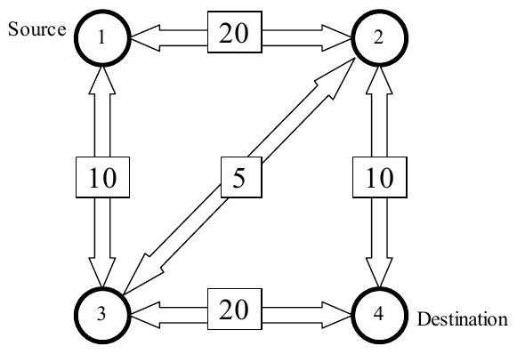

The 2000 ACM Programming Contest World Finals sponsored by IBM · Problem E
On the Internet, machines (nodes) are richly interconnected, and many paths may exist between a given pair of nodes. The total message-carrying capacity (bandwidth) between two given nodes is the maximal amount of data per unit time that can be transmitted from one node to the other. Using a technique called packet switching, this data can be transmitted along several paths at the same time.
For example, the following figure shows a network with four nodes (shown as circles), with a total of five connections among them. Every connection is labeled with a bandwidth that represents its data-carrying capacity per unit time.

In our example, the bandwidth between node 1 and node 4 is 25, which might be thought of as the sum of the bandwidths 10 along the path 1-2-4, 10 along the path 1-3-4, and 5 along the path 1-2-3-4. No other combination of paths between nodes 1 and 4 provides a larger bandwidth.
You must write a program that computes the bandwidth between two given nodes in a network, given the individual bandwidths of all the connections in the network. In this problem, assume that the bandwidth of a connection is always the same in both directions (which is not necessarily true in the real world).
The input file contains descriptions of several networks. Every description starts with a line containing a single integer n (2 ≤ n ≤ 100), which is the number of nodes in the network. The nodes are numbered from 1 to n. The next line contains three numbers s, t, and c. The numbers s and t are the source and destination nodes, and the number c is the total number of connections in the network. Following this are c lines describing the connections. Each of these lines contains three integers: the first two are the numbers of the connected nodes, and the third number is the bandwidth of the connection. The bandwidth is a non-negative number not greater than 1000.
There might be more than one connection between a pair of nodes, but a node cannot be connected to itself. All connections are bi-directional, i.e. data can be transmitted in both directions along a connection, but the sum of the amount of data transmitted in both directions must be less than the bandwidth.
A line containing the number 0 follows the last network description, and terminates the input.
For each network description, first print the number of the network. Then print the total bandwidth between the source node s and the destination node t, following the format of the sample output. Print a blank line after each test case.
4 1 4 5 1 2 20 1 3 10 2 3 5 2 4 10 3 4 20 0
Network 1 The bandwidth is 25.